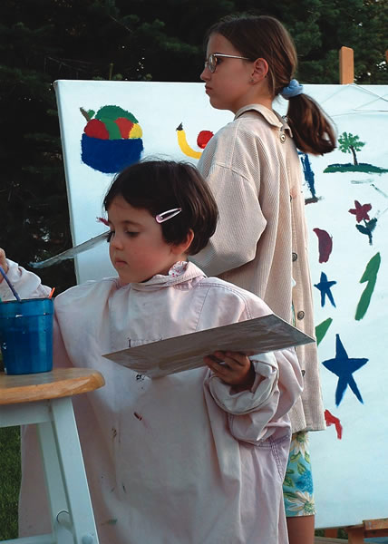

Your image of southeast Iowa probably doesn’t include the world’s premier ayurvedic health spa, more restaurants per capita than San Francisco or 25 art galleries on the downtown square, but these are just some of the many features of Fairfield, a surprisingly sustainable and cosmopolitan town.
Since 1971, Fairfield has been home to Maharishi University of Management, founded by the Maharishi Mahesh Yogi. What began as an effort to teach India’s ancient principles of health and peace to Americans has spread into many aspects of life in the community. Fairfield hosts an Eco-Fair every year, and has the most homes with solar energy or other green building features in Iowa. The county has the most acres of organic cultivation in the state. It also has earned praise for its entrepreneurial spirit - many small businesses thrive there.
Two miles north of Fairfield is Maharishi Vedic City, where all homes are designed and built according to the principles of ayurvedic architecture, in which each building faces east and has a central silent space called a Brahmasthan and a golden roof ornament called a kalash. The sale of nonorganic food is banned in the city, and construction recently began on what will be 100 acres of greenhouses powered by wind and solar energy for the year-round production of organic food.
Do you live in Fairfield? Have you visited? Please post your comments below.
Population: 9,459
County: Jefferson
Climate: hot summers; cold winters; rainy springs
Cost of living index: 79.7
Median home price: $96,200
Alternative energy: net metering and renewable energy incentives
Don’t miss: Maharishi University’s golden domes
|
 STACEY HURLIN/FAIRFIELD, IOWA Art is a local passion in Fairfield. |
|
|